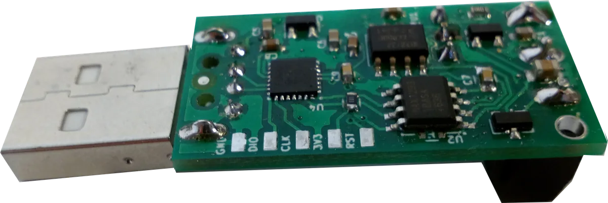
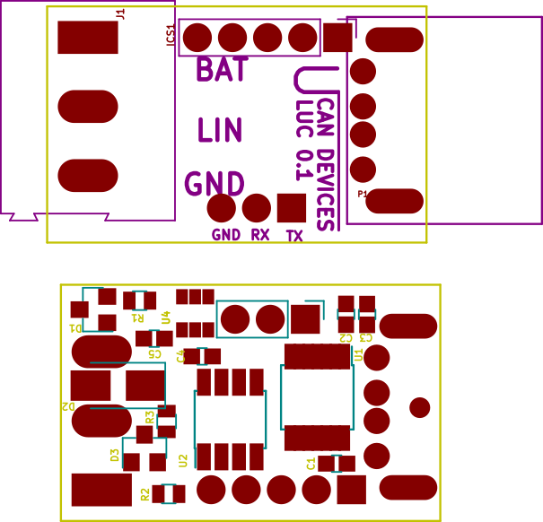
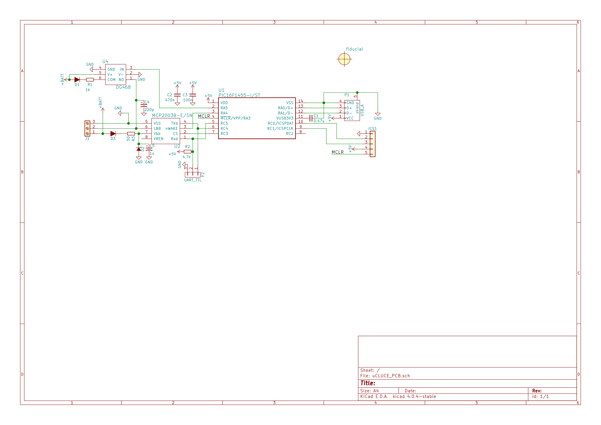
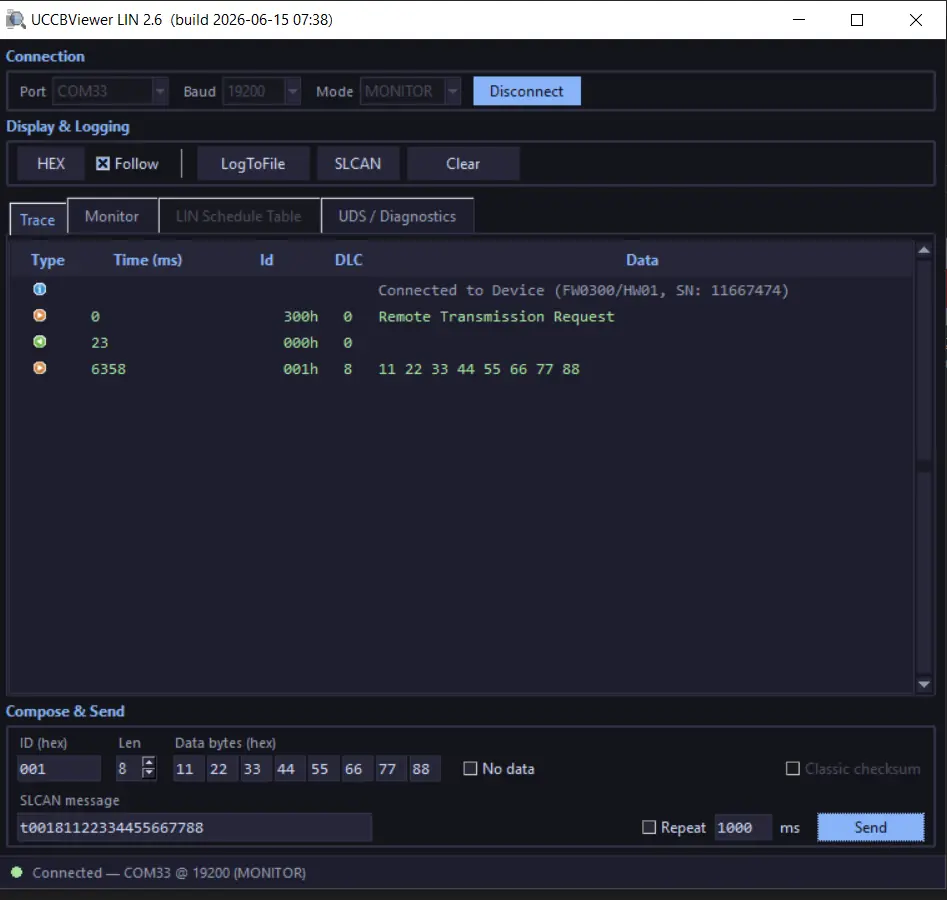

USB LIN Converter
Open source LIN 2.1 master, slave and bus monitor dongle. SLCAN compatible. Plug-and-play on Windows, Linux and macOS.
Buy with Card Buy on Tindie Buy on Lectronz Source on GitHub
Description
The LIN (Local Interconnect Network) USB Converter (uLC) shows up on the PC as a virtual COM port that handles all LIN communication. Features:
- LIN 2.1, classic or enhanced checksum
- Monitor mode: receives all frames, can send single frames
- Master mode, with up to 16 frame slots
- Slave mode, with up to 16 frame slots
- 19200/9600 baud rate, or a custom rate (e.g. 10417)
- Optical isolation for LIN
- External 4.5 V to 28 V is needed for LIN network
- Device size is 31x18 mm (without USB connector)
- Termination resistors controlled by software
- USB DFU bootloader for firmware updates
- SLCAN compatible, works with Linux SocketCAN and some of can-utils
- No driver installation on Windows 10/11, Linux and macOS
- Supported by the CANgaroo bus analyzer (master with LDF schedule tables, slave, monitor)
- MCP server, so AI agents can sniff and reverse-engineer a LIN bus (see Tools)
Introduction video
Details
Board bottom view

The virtual COM port is used both for data transfer and converter setup.
The device is powered from USB; the LIN transceiver needs the external 4.5-28 V supply.
Board layout is shown below.

Drivers
No driver is needed on Windows 10/11, Linux or macOS: the built-in USB CDC driver is used. Since firmware 3.5 the device has its own USB ID 1209:2779 from pid.codes. Older firmware used ST's generic 0483:5740; on Windows 7/8 that needs the virtual COM port driver from the ST site or from here. Updating the firmware (see Sources) removes the need for that driver.
COM port Commands
Below is the list of all available commands.
The COM port baud rate is virtual, so any value works.
All commands are ASCII, terminated with CR (0xD).
On error the device responds with 0x7.
Commands are executed one at a time: wait for the reply (CR, z/Z or 0x7) before sending the next one.
| Command | Description |
| O | Opens device in master mode. Add frames to the schedule table, then start it with r1ff0. |
| C | Close LIN port on device, frame will not be received. |
| Sx | Baud rate selection: S2 - 9600 S0, S1, S3-S8 - 19200 |
| V | Get hardware version. |
| v | Get firmware version. |
| N | Get serial number. |
| L | Open device in slave mode, for LIN slave simulation. |
| l | Open device in monitor mode (bus analyzer), with single frame sending. |
| tiiildd | In Monitor mode, transmits full header and data frame. In Master mode, updates table set with new frame In Slave mode, updates table set with new data 0ii: Identifier in hexadecimal format (000-0FF) l: Data length (0-8) dd: Data byte value in hexadecimal format (00-FF) |
| r0iil | In Monitor mode, transmits header only with set ID and Length, subscribed slave should answer the header. In Master mode, puts or updates table set with this id for continuous sending. In Slave mode, updates table set with reception slot Proper timing is set according to LIN standard. 0ii: Identifier in hexadecimal format (000-0FF) l: Data length (0-8) |
| r1ff0 | In Master mode, starts sending frames from table. |
| r2ff0 | In Master, Slave mode, clears schedule table. |
| r31 / r30 | Checksum for all frames: r31 classic (LIN 1.x), r30 enhanced (LIN 2.x, default). Diagnostic frames 0x3C/0x3D always use classic. Replies Z. Kept until power off. |
| t04bbbb | Custom LIN baud rate, bbbb = 4 hex digits, e.g. t0428B1 = 10417 baud. Send before adding frames. Replies Z. |
| T0iipptt0ldd / R0iipptt0l | Master mode: frame with explicit delay and response wait time, see Custom frame timing below. |
| boot | Restart into the USB DFU bootloader, for firmware update. |
Example workflow for Monitor Mode
000005: C (send close command)
000006: v (ask for firmware version)
000007: v0308 (get version number from device, here 3.8)
000008: V (ask for hardware version)
000009: V01
000010: N
000011: N16000000
000012: S0 (speed setting, 19200)
000013:
000015:
000014: l (open in monitor mode)
000015:
000016: r0128 (transmit header with 8 data bytes request, id 0x12)
000017: z
000018: t01280011223344556677 (slave responded for header request with 8 byte data frame)
Example workflow for Master Mode
000001: O (open in master mode)
000002:
000003: r0018 (add to schedule table: header requesting 8 data bytes, id 0x01)
000004: z
000005: r0022 (add to schedule table: header requesting 2 data bytes, id 0x02)
000006: z
000007: t01280011223344556677 (add to schedule table: header + 8 data bytes sent by the master, id 0x12)
000008: z
000009: r1ff0 (start sending frames)
000010: z
Custom frame timing
In master mode you can set the timing of each slot: use upper caseT instead of t or R instead of r, with the format
T 0 ii pp tt 0 l dd dd ...where:
ii - frame id, same as standard (hex)
pp - delay in ms (hex): time from the start of the previous slot's header to this slot's header (firmware 3.4 and later; older firmware counted it from the end of the previous frame)
tt - response wait time in ms (hex)
l - frame length
dd ... - data (only for
T) Without it (lower case
t / r) the delay is 15 ms and the response wait time follows the LIN standard for the frame length.Example: frame with id 0x0A, 100 ms delay (0x64), 48 ms wait time (0x30), 1 data byte A5:
T00A643001A5
Product and its documentation is supplied on an as-is basis and no warranty as to their suitability for any particular purpose is either made or implied. Producer will not accept any claim for damages howsoever arising as a result of use or failure of this product. This product is not intended for use in any medical appliance, device or system in which the failure of the product might reasonably be expected to result in personal injury.
Hardware
The converter uses an ST STM32F042 microcontroller. The PCB is designed in KiCad. All source files are available on GitHub here.

Software
Converter software is pure C code, built with free STM32CubeIDE (tested with 1.19). The newest firmware is 3.8; every release lists its changes and how it was tested. All sources and releases with compilation instructions are available in our github here.
Uploading new software
The uLC has an embedded USB DFU bootloader. Send boot over the COM port to enter it, then flash the .bin from the latest release with STM32CubeProgrammer, see this tutorial.
Tools
Python support
The uCANLinTools Python library supports LDF parsing, LIN frame (PID) encoding/decoding, and LIN master and slave. Source code and examples are here.
CANgaroo (GUI analyzer)
CANgaroo is an open source CAN / CAN FD / LIN bus analyzer for Windows and Linux with built-in uLC support. The converter is detected automatically and works in all three modes:
- Monitor - frame trace with timestamps, frames nobody answered are marked as NOT RESPONDED, single frames sent from the TX generator
- Master - schedule tables loaded from an LDF file (up to 16 slots), switching between schedule tables, live payload updates
- Slave - simulation of a slave node: publishes its frames from the LDF and receives the master's frames
- LDF signal decoding, graphs and Python scripting, baud rates from 2400 to 20000 (including 10417), classic or enhanced checksum
uLC support was merged into CANgaroo in November 2026 and will be part of its next release; until then build CANgaroo from the master branch. Firmware 3.8 or newer is recommended.
AI agents (MCP server)
ucan-lin-mcp is an MCP server that lets an AI agent (Claude, ChatGPT, Copilot and other MCP clients) sniff and reverse-engineer a LIN bus: capture traffic with per-id periods and changing bits, log every data change while you press a button, find the bus speed and checksum type automatically, and decode or encode signals from an LDF file.
It is read-only by default; sending frames and acting as master or slave needs --allow-transmit. Register it with any MCP client as a stdio server:
{"mcpServers": {"lin": {"command": "uvx", "args": ["ucan-lin-mcp", "--port", "COM3"]}}}
uvx ucan-lin-mcp --mock runs it on a simulated bus, without a converter. Source and documentation: here.
Serial port
The uLC works with any serial terminal (e.g. PuTTY) on any operating system; the commands are listed in the About section. The command set follows the uCAN USB-CAN converter, so its tools can be reused.
UCCBViewer is a GUI program for both uCAN CAN and LIN converters. For USB-LIN converter uCCBViewer functionalities are:
frame reception, transmission, master table setup, LIN schedule table and UDS / diagnostics. The viewer is now written in Python, so Java is no longer required. 
Newest release of UCCBViewer (p2.6)